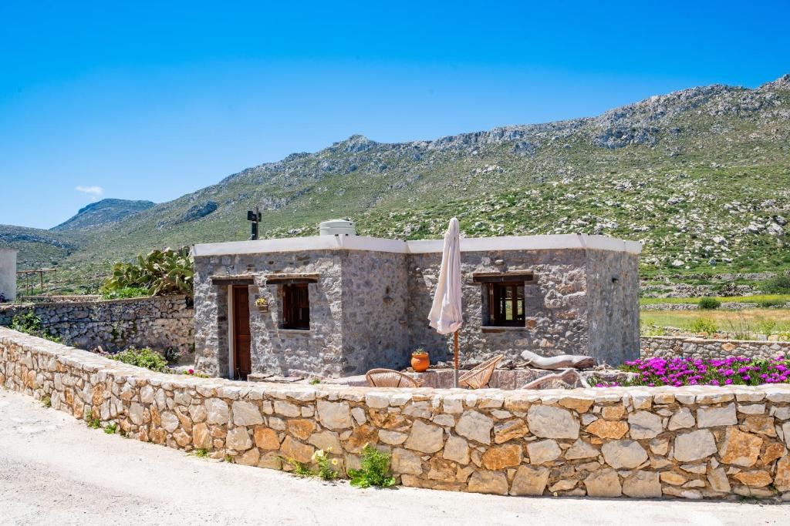

Traditional Recipes
Discover authentic dishes inspired by the culinary traditions of Karpathos.
A FAMILY TAVERNA
Edem Garden is a family taverna in Olympos, Karpathos, offering fresh traditional homemade food in a peaceful terrace surrounded by flowers, plants and mountain views.
Mrs Toula is the owner of the restaurant and her daughter Popi welcomes guests in the dining room and terrace. Here, traditional recipes, local ingredients and a relaxed atmosphere come together to create a genuine Karpathian experience.
THE STORY BEHIND THE NAME
The restaurant is beautiful terrace surrounded by flowers and plants, offering a breathtaking view of the mountains and the traditional village of Olympos. It is a peaceful place to enjoy a meal, a breakfast or simply relax with a greek cofee and take in the scenery.
Come for the food. Stay for the view, the terrace and the warm family atmosphere.
TRADITIONAL KARPATHIAN FOOD
Our kitchen focuses on traditional homemade food, prepared with the simple flavours and ingredients of Greek island cooking.
Discover authentic dishes inspired by the culinary traditions of Karpathos.
Start your day with a fresh breakfast or enjoy a hot or cold coffee surrounded by nature.
Traditional Greek sweets prepared with the same homemade philosophy.
A relaxing terrace overlooking the mountains and the traditional village of Olympos, offering one of the most breathtaking views in northern Karpathos.
THE OLYMPOS VILLAGE
Olympos offers breathtaking panoramas in every direction: from the east, where a small untouched valley stretches out beneath the mountains, to the west, where the sea seems to disappear into the horizon, creating the perfect setting for spectacular sunsets.


“Fresh traditional homemade food, a beautiful view and a relaxing terrace.”
COME AND SEE US
Find us in the heart of Olympos, a beautiful traditional village surrounded by the mountains of northern Karpathos, famous for its peaceful atmosphere and breathtaking sunsets, where traditions remain deeply rooted in the hearts of its people.
Epar.Od. Olimpou-Diafaniou
Diafani 857 00
Karpathos, Greece



STAY NEAR OLYMPOS
Looking for somewhere to stay nearby?
Lithos House is a traditional holiday home in the rural settlement of Avlona, close to Olympos in northern Karpathos.
The house offers one bedroom, a living room, a fully equipped kitchen, bathroom, air conditioning, WiFi, private parking, a garden and a terrace with views.
View Lithos House